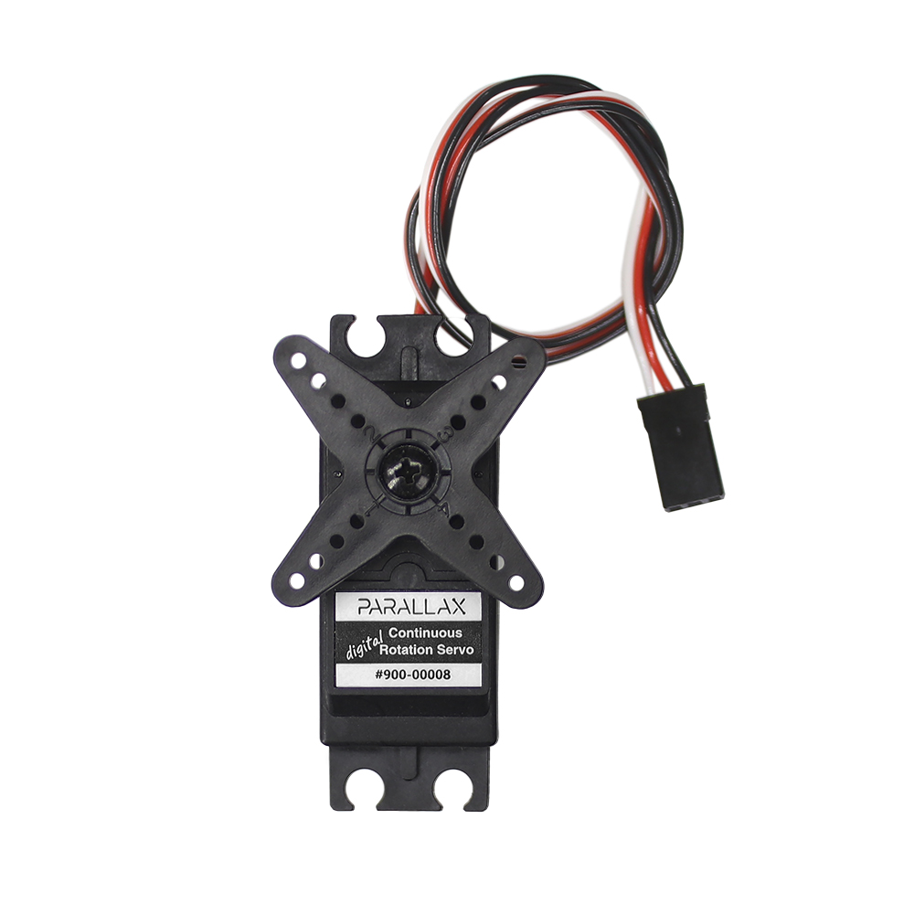
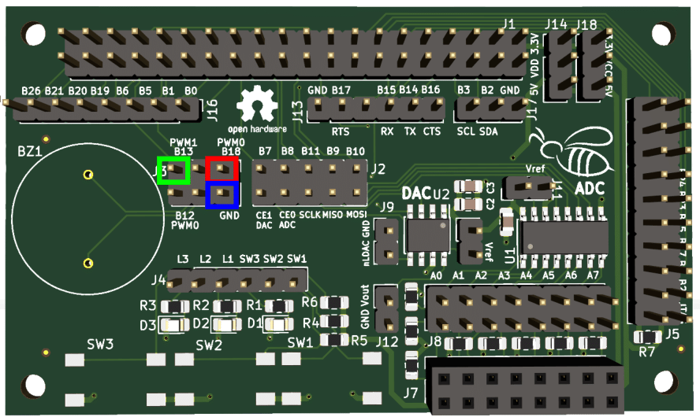

Control de servomotores con PWM¶
En esta práctica vamos a aprender como controlar un servomotor usando el generador de PWM de la Raspberry Pi, la placa BEE y la librería wiringpi. Esta práctica es parte de la asignatura de Robótica y Mecatrónica del Máster en Nuevas Tecnologías Electrónicas y Fotónicas de la Universidad Complutense de Madrid. Es parte de un proyecto donde los alumnos crean desde cero su propia plataforma robótica móvil.
Servomotores¶
Para la elección de los servomotores se elegirán dos servomotores del tipo Parallax Continous Rotation Servo. Estos servomotores tienen una velocidad máxima de 50rpm son bidireccionales y de sencilla implementación. La información proporcionada por el fabricante se puede consultar en la hoja de referencia disponible online (Aqui).

Señal PWM¶
Existen dos posibilidades de generar una señal PWM usando la Raspberry Pi.
La primera consiste en utilizar implementaciones software de librerías como WiringPi en donde el sistema operativo de la raspberry se utiliza para generar pulsos PWM. Este método es propenso a errores de precisión debido a que el proceso debe compartir recursos con el resto de procesos de la Raspberry Pi.
La segunda se basa en utilizar la implementación hardware de la señal PWM de la que dispone la Raspberry Pi. Este método consiste en el uso de un reloj externo específico para la generación de esta señal. Al no depender del sistema operativo este método suele ser mucho más preciso y el que se recomienda usar para el control de motores. En esta práctica explicaremos la implementación de la señal usando el PWM hardware.
PWM hardware¶
Lo primero que hay que saber para trabajar con la señal de PWM, es que el reloj disponible en la Raspberry Pi funciona a una frecuencia constante de 19.2 Mhz. Nuestro primero objetivo es adaptar esta frecuencia a la frecuencia de trabajo de nuestros servos. En nuestro caso, echando un vistazo al dataseet de los motores, vemos que el fabricante recomienda un periodo entre pulsos de 20ms. Esto equivale a una frecuencia de trabajo aproximada de 50Hz.
Para definir esta frecuencia en la Raspberry Pi disponemos de dos parámetros: el divisor y el rango. El divisor nos permite escalar la frecuencia de trabajo del reloj. El rango nos define la resolución de cada periodo de PWM y por lo tanto también la frecuencia máxima que podremos conseguir.
Configuración de la Frecuencia PWM¶
Para ajustar la frecuencia de la señal PWM, utilizamos dos parámetros:
- Divisor (
D): Reduce la frecuencia del reloj de 19.2 MHz. - Rango (
R): Define la resolución del ciclo de trabajo y afecta la frecuencia resultante.
La ecuación para calcular la frecuencia PWM es:
Ejemplo para obtener 50 Hz:- Divisor (
D) = 1920 - Rango (
R) = 200
Cálculo:
Código¶
Para implementar la señal PWM con la frecuencia indicada en el apartado anterior se puede utilizar el siguiente código base. Este código utiliza la biblioteca WiringPi para generar señales PWM y controlar la intensidad de giro de dos motores conectados a la Raspberry Pi.
Código en C:¶
#include <wiringPi.h>
#include <stdio.h>
#include <stdlib.h>
// Definición de pines PWM según WiringPi
const int PWM_pin_izda = 1; // Rueda izquierda (GPIO1 rasPi, BCM18/PWM0 en BEE)
const int PWM_pin_dcha = 23; // Rueda derecha (GPIO23 raspi, BCM13/PWM1 en BEE)
int main(void) {
int intensidad;
int rango = 200; // Rango del PWM (valor máximo de duty cycle)
int divisor = 1920; // Factor de división del reloj PWM
// Inicialización de WiringPi
if (wiringPiSetup() == -1) exit(1);
// Configuración del pin de salida PWM
pinMode(PWM_pin_dcha, PWM_OUTPUT);
pinMode(PWM_pin_izda, PWM_OUTPUT);
// Configuración del PWM por hardware
pwmSetRange(rango);
pwmSetClock(divisor);
pwmSetMode(PWM_MODE_MS);
while (1) {
// Secuencia de movimiento con diferentes valores de PWM
pwmWrite(PWM_pin_dcha, 13);
pwmWrite(PWM_pin_izda, 17);
printf("Moviendo a 17\n");
getchar();
pwmWrite(PWM_pin_dcha, 8);
pwmWrite(PWM_pin_izda, 80);
printf("Moviendo a 80\n");
getchar();
pwmWrite(PWM_pin_dcha, 6);
pwmWrite(PWM_pin_izda, 130);
printf("Moviendo a 130\n");
getchar();
pwmWrite(PWM_pin_dcha, 1);
pwmWrite(PWM_pin_izda, 190);
printf("Moviendo a 190\n");
getchar();
// Detener motores
pwmWrite(PWM_pin_dcha, 0);
pwmWrite(PWM_pin_izda, 0);
getchar();
// Variación gradual de la intensidad de PWM
for (intensidad = 0; intensidad < rango; ++intensidad) {
pwmWrite(PWM_pin_dcha, intensidad);
delay(100);
printf("Intensidad: %d\n", intensidad);
}
delay(1);
for (intensidad = rango; intensidad >= 0; --intensidad) {
pwmWrite(PWM_pin_dcha, intensidad);
delay(100);
printf("Intensidad: %d\n", intensidad);
}
delay(1);
}
}
Conexiones con la placa BEE¶
Una vez tenemos implementado el código lo único que nos quedaría sería realizar las conexiones correspondientes entre la placa BEE y los servomotores para probar el movimiento de los mismos.
La Raspberry Pi dispone de dos salidas PWM hardware correspondientes con los pines GPIO 1 y GPIO 23. Estos pines se corresponden en la placa BEE con los pines BCM18/PWM0 (rojo en la imagen de abajo) y BCM13/PWM1 (verde en la imagen de abajo) correspondientemente. A estos pines deberemos conectar el cable de control (cable blanco) de cada motor. Siguiendo lo especificado en el código el motor izquierdo deberá conectarse al PWM0 y el derecho al PWM1.

Una vez hecho esto solo nos quedaría alimentar los servomotores a 5V siguiendo lo especificado por el fabricante. Para ello podemos usar una placa entrenador y una fuente de alimentación externa (por ejemplo una power bank). De esta forma podemos crear una vía de alimentación en en el entrenador en donde conectaremos nuestros motores.
Por último, seguiremos el mismo procedimiento para las tierras. En este caso tendremos que asegurarnos que las tierras de ambos motores y la tierra de la placa BEE (conector azul en la imagen, entre otros) están conectadas al mismo punto para tener una referencia común.